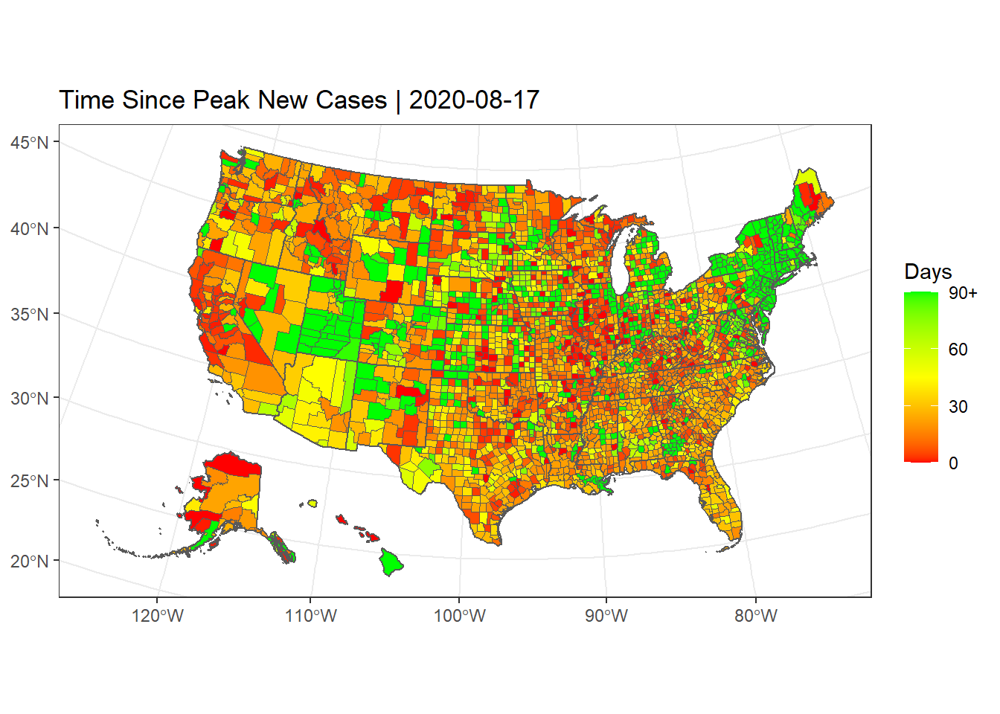
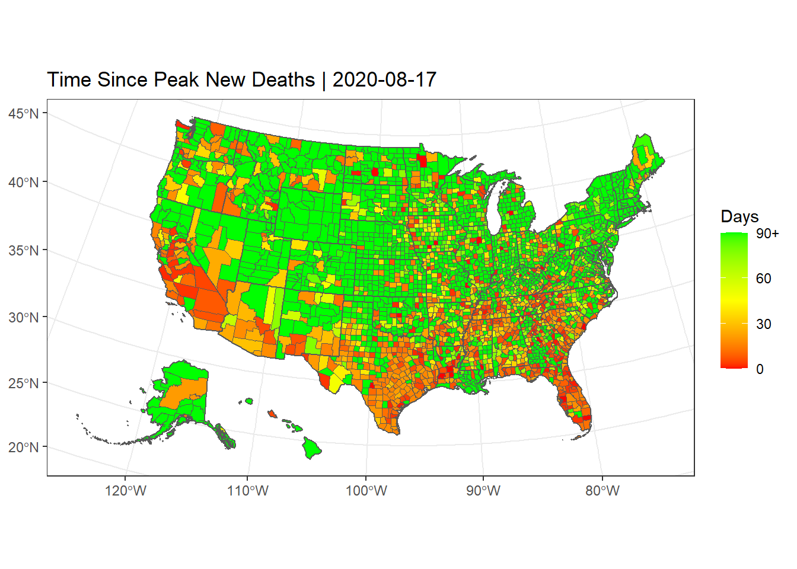

library(tidyr)
library(dplyr)
library(stringr)
library(ggplot2)
library(readr)
library(scales)
library(sf)
library(urbnmapr)
library(plotly)
library(tidyverse)
library(mlbench)
library(caret)
library(zoo)jhu_url <- paste("https://raw.githubusercontent.com/CSSEGISandData/",
"COVID-19/master/csse_covid_19_data/", "csse_covid_19_time_series/",
"time_series_covid19_confirmed_US.csv", sep = "")
jhu_deaths <- paste("https://raw.githubusercontent.com/CSSEGISandData/",
"COVID-19/master/csse_covid_19_data/", "csse_covid_19_time_series/",
"time_series_covid19_deaths_US.csv", sep = "")
census_url <- paste("https://www2.census.gov/programs-surveys/popest/",
"datasets/2010-2019/counties/totals/co-est2019-alldata.csv",sep = "")covidData <-
read_csv(jhu_url) %>%
rename(province = "Province_State",
country_region = "Country_Region",
county="Admin2") %>%
select(-c(UID,iso2,iso3,code3,country_region,Lat,Long_,Combined_Key)) %>%
pivot_longer(-c(province,county,FIPS), names_to = "d",
values_to = "cumulative_cases") %>%
separate(d,c("Month","Day","Year"),sep="/") %>%
mutate(dstring=sprintf("%02i/%02i/%02i", #some parsing to make dates work correctly
as.numeric(Month),
as.numeric(Day),
as.numeric(Year)),
d=as.Date(dstring,"%m/%d/%y")) %>%
select(d,county,province,FIPS,cumulative_cases) %>%
arrange(d) %>%
group_by(FIPS) %>% #for each FIPS ID, calculate new cases per day
mutate(new_cases = cumulative_cases-dplyr::lag(cumulative_cases,1)) %>%
ungroup() %>%
filter(!is.na(FIPS))## Parsed with column specification:
## cols(
## .default = col_double(),
## iso2 = col_character(),
## iso3 = col_character(),
## Admin2 = col_character(),
## Province_State = col_character(),
## Country_Region = col_character(),
## Combined_Key = col_character()
## )## See spec(...) for full column specifications.covidDeath <-
read_csv(jhu_deaths) %>%
rename(province = "Province_State",
country_region = "Country_Region",
county="Admin2") %>%
select(-c(UID,iso2,iso3,code3,country_region,Lat,Long_,Combined_Key)) %>%
pivot_longer(-c(province,Population,county,FIPS), names_to = "d",
values_to = "cumulative_deaths") %>%
separate(d,c("Month","Day","Year"),sep="/") %>%
mutate(dstring=sprintf("%02i/%02i/%02i", #some parsing to make dates work correctly
as.numeric(Month),
as.numeric(Day),
as.numeric(Year)),
d=as.Date(dstring,"%m/%d/%y")) %>%
select(d,county,province,FIPS,cumulative_deaths) %>%
arrange(d) %>%
group_by(FIPS) %>% #for each FIPS ID, calculate new cases per day
mutate(new_deaths = cumulative_deaths-dplyr::lag(cumulative_deaths,1)) %>%
ungroup() %>%
filter(!is.na(FIPS))## Parsed with column specification:
## cols(
## .default = col_double(),
## iso2 = col_character(),
## iso3 = col_character(),
## Admin2 = col_character(),
## Province_State = col_character(),
## Country_Region = col_character(),
## Combined_Key = col_character()
## )## See spec(...) for full column specifications.covidData <-
covidData %>%
left_join(select(covidDeath,d,FIPS,cumulative_deaths,new_deaths),
by = c("FIPS","d"),
na_matches="never")
rm(covidDeath)co_est2019_alldata =
read_csv(census_url) %>%
select(STATE,COUNTY,POPESTIMATE2019) %>%
rename(population="POPESTIMATE2019") %>%
mutate(FIPS=as.numeric(str_c(as.character(STATE),as.character(COUNTY)))) ## Parsed with column specification:
## cols(
## .default = col_double(),
## SUMLEV = col_character(),
## STATE = col_character(),
## COUNTY = col_character(),
## STNAME = col_character(),
## CTYNAME = col_character()
## )## See spec(...) for full column specifications.#Combine covid and population data
covidData =
covidData %>%
left_join(select(co_est2019_alldata,FIPS,population),by="FIPS") %>%
filter(!is.na(population))dCovid = covidData %>%
mutate(ncap=new_cases/population*1e5) %>%
mutate(dcap=new_deaths/population*1e5) %>%
group_by(FIPS) %>%
mutate(rnew=rollmean(new_cases,7,fill=NA,align="right")) %>%
mutate(rdnew=rollmean(new_deaths,7,fill=NA,align="right")) %>%
mutate(rncap=rollmean(ncap,7,fill=NA,align="right")) %>%
mutate(rdcap=rollmean(dcap,7,fill=NA,align="right")) %>%
ungroup()summary(dCovid)## d county province
## Min. :2020-01-22 Length:656678 Length:656678
## 1st Qu.:2020-03-14 Class :character Class :character
## Median :2020-05-05 Mode :character Mode :character
## Mean :2020-05-05
## 3rd Qu.:2020-06-26
## Max. :2020-08-17
##
## FIPS cumulative_cases new_cases
## Min. : 1001 Min. : 0.0 Min. :-621.000
## 1st Qu.:18177 1st Qu.: 0.0 1st Qu.: 0.000
## Median :29176 Median : 9.0 Median : 0.000
## Mean :30384 Mean : 492.5 Mean : 8.181
## 3rd Qu.:45081 3rd Qu.: 103.0 3rd Qu.: 2.000
## Max. :56045 Max. :230458.0 Max. :7837.000
## NA's :3142
## cumulative_deaths new_deaths population
## Min. : 0.00 Min. :-54.000 Min. : 86
## 1st Qu.: 0.00 1st Qu.: 0.000 1st Qu.: 10901
## Median : 0.00 Median : 0.000 Median : 25726
## Mean : 21.63 Mean : 0.257 Mean : 104468
## 3rd Qu.: 2.00 3rd Qu.: 0.000 3rd Qu.: 68098
## Max. :23634.00 Max. :814.000 Max. :10039107
## NA's :3142
## ncap dcap rnew
## Min. :-2024.291 Min. :-166.7709 Min. : -70.143
## 1st Qu.: 0.000 1st Qu.: 0.0000 1st Qu.: 0.000
## Median : 0.000 Median : 0.0000 Median : 0.286
## Mean : 5.862 Mean : 0.1384 Mean : 8.213
## 3rd Qu.: 4.506 3rd Qu.: 0.0000 3rd Qu.: 2.286
## Max. : 7949.309 Max. : 247.5248 Max. :5214.143
## NA's :3142 NA's :3142 NA's :21994
## rdnew rncap rdcap
## Min. : -2.857 Min. :-299.316 Min. :-23.824
## 1st Qu.: 0.000 1st Qu.: 0.000 1st Qu.: 0.000
## Median : 0.000 Median : 0.933 Median : 0.000
## Mean : 0.261 Mean : 5.834 Mean : 0.139
## 3rd Qu.: 0.000 3rd Qu.: 5.827 3rd Qu.: 0.000
## Max. :760.143 Max. :1648.352 Max. : 46.672
## NA's :21994 NA's :21994 NA's :21994dCovid =
dCovid %>%
group_by(FIPS) %>%
mutate(peak_rnew = max(rnew,na.rm=TRUE),
peak_rdnew = max(rdnew,na.rm=TRUE),
dateMax =d[which.max(rnew)],
dateMax_rdnew =d[which.max(rdnew)],
daySince = as.numeric(d - dateMax),
daySince_rdnew = as.numeric(d - dateMax_rdnew))dNow = max(dCovid$d)
ddCovid=dCovid %>%
filter(d==dNow)counties_sf =
get_urbn_map("counties", sf = TRUE) %>%
mutate(FIPS=as.numeric(county_fips)) %>%
left_join(ddCovid,by="FIPS")states <-
counties_sf %>%
group_by(province) %>%
summarise(do_union = TRUE) %>%
st_cast()## `summarise()` ungrouping output (override with `.groups` argument)pday_cases=counties_sf %>%
ggplot() +
geom_sf(aes(fill=daySince),size=0.1) +
geom_sf(data=states,fill=NA,size=0.5) +
scale_fill_gradient2(low="red",mid="yellow",high="green",midpoint=90/2,
breaks=c(0,30,60,90),
labels=c("0","30","60","90+"),
limits=c(0,90),
oob=squish)+
ggtitle(str_c("Time Since Peak New Cases | ",dNow)) +
coord_sf(crs=5070) +
theme_bw() +
labs(fill = "Days")
print(pday_cases) 
pday_deaths=counties_sf %>%
ggplot() +
geom_sf(aes(fill=daySince_rdnew),size=0.1) +
geom_sf(data=states,fill=NA,size=0.5) +
scale_fill_gradient2(low="red",mid="yellow",high="green",midpoint=90/2,
breaks=c(0,30,60,90),
labels=c("0","30","60","90+"),
limits=c(0,90),
oob=squish)+
ggtitle(str_c("Time Since Peak New Deaths | ",dNow)) +
coord_sf(crs=5070) +
theme_bw() +
labs(fill = "Days")
print(pday_deaths)
counties_sf$cases_category <- cut(counties_sf$daySince, breaks=c(-Inf, 30, 60, Inf), labels = c("High", "Med", "Low"))counties_sf$deaths_category <- cut(counties_sf$daySince_rdnew, breaks=c(-Inf, 30, 60, Inf), labels = c("High", "Med", "Low"))
deaths_category <- cut(counties_sf$daySince_rdnew, breaks=c(-Inf, 30, 60, Inf), labels = c("High", "Med", "Low"))